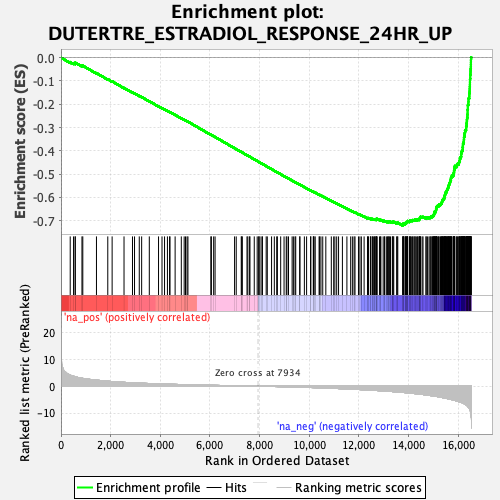
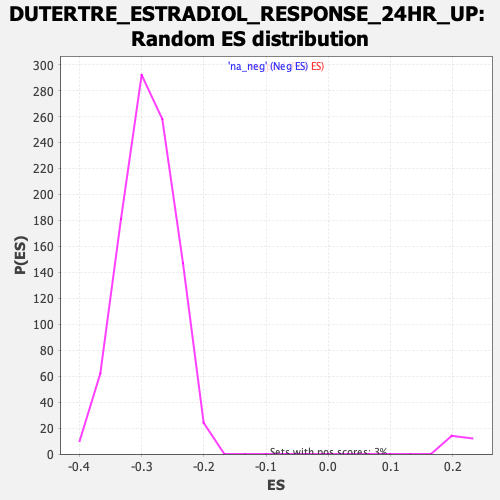

| | | Dataset | DE_genes2 |
| Phenotype | NoPhenotypeAvailable |
| Upregulated in class | na_neg |
| GeneSet | DUTERTRE_ESTRADIOL_RESPONSE_24HR_UP |
| Enrichment Score (ES) | -0.720816 |
| Normalized Enrichment Score (NES) | -2.4812262 |
| Nominal p-value | 0.0 |
| FDR q-value | 0.0 |
| FWER p-Value | 0.0 |
Table: GSEA Results Summary

Fig 1: Enrichment plot: DUTERTRE_ESTRADIOL_RESPONSE_24HR_UP
Profile of the Running ES Score & Positions of GeneSet Members on the Rank Ordered List
| PROBE | GENE SYMBOL | GENE_TITLE | RANK IN GENE LIST | RANK METRIC SCORE | RUNNING ES | CORE ENRICHMENT | | 1 | TFF1 | | | 371 | 4.106 | -0.0190 | No |
| 2 | AMZ1 | | | 505 | 3.698 | -0.0238 | No |
| 3 | TST | | | 571 | 3.508 | -0.0245 | No |
| 4 | ARMCX6 | | | 573 | 3.499 | -0.0214 | No |
| 5 | PAQR4 | | | 844 | 2.958 | -0.0352 | No |
| 6 | DSCAM | | | 878 | 2.898 | -0.0346 | No |
| 7 | SEMA3B | | | 1428 | 2.240 | -0.0663 | No |
| 8 | COLGALT1 | | | 1884 | 1.856 | -0.0927 | No |
| 9 | EPS15L1 | | | 2059 | 1.714 | -0.1018 | No |
| 10 | C1QTNF6 | | | 2538 | 1.422 | -0.1299 | No |
| 11 | KCNK15 | | | 2879 | 1.253 | -0.1497 | No |
| 12 | CTSD | | | 2961 | 1.212 | -0.1536 | No |
| 13 | NFATC2 | | | 3152 | 1.131 | -0.1642 | No |
| 14 | CELSR2 | | | 3248 | 1.093 | -0.1691 | No |
| 15 | EBP | | | 3556 | 0.987 | -0.1871 | No |
| 16 | SLC9A3R1 | | | 3928 | 0.859 | -0.2091 | No |
| 17 | DEGS2 | | | 4068 | 0.819 | -0.2170 | No |
| 18 | XBP1 | | | 4170 | 0.786 | -0.2224 | No |
| 19 | NOS1AP | | | 4286 | 0.753 | -0.2288 | No |
| 20 | SULF1 | | | 4373 | 0.728 | -0.2335 | No |
| 21 | COL12A1 | | | 4389 | 0.723 | -0.2337 | No |
| 22 | SIAH2 | | | 4596 | 0.663 | -0.2458 | No |
| 23 | GLB1L2 | | | 4845 | 0.606 | -0.2605 | No |
| 24 | PKIB | | | 4960 | 0.579 | -0.2670 | No |
| 25 | SYTL5 | | | 5014 | 0.567 | -0.2697 | No |
| 26 | RAB31 | | | 5075 | 0.551 | -0.2729 | No |
| 27 | MYB | | | 5112 | 0.540 | -0.2746 | No |
| 28 | SLC2A1 | | | 6035 | 0.339 | -0.3312 | No |
| 29 | SLC39A8 | | | 6056 | 0.335 | -0.3321 | No |
| 30 | KCNK6 | | | 6148 | 0.316 | -0.3374 | No |
| 31 | LSM4 | | | 6205 | 0.302 | -0.3406 | No |
| 32 | CNIH2 | | | 6990 | 0.157 | -0.3887 | No |
| 33 | STMN1 | | | 7057 | 0.145 | -0.3927 | No |
| 34 | RAPGEFL1 | | | 7259 | 0.105 | -0.4050 | No |
| 35 | MAN1A1 | | | 7278 | 0.101 | -0.4060 | No |
| 36 | LRIG1 | | | 7302 | 0.098 | -0.4073 | No |
| 37 | NCAPH2 | | | 7491 | 0.067 | -0.4188 | No |
| 38 | GFRA1 | | | 7525 | 0.060 | -0.4208 | No |
| 39 | TCF19 | | | 7598 | 0.049 | -0.4252 | No |
| 40 | SLC27A2 | | | 7606 | 0.047 | -0.4256 | No |
| 41 | TMEM241 | | | 7783 | 0.020 | -0.4364 | No |
| 42 | HR | | | 7901 | 0.004 | -0.4436 | No |
| 43 | ABHD2 | | | 7962 | -0.005 | -0.4473 | No |
| 44 | C21orf58 | | | 7972 | -0.007 | -0.4479 | No |
| 45 | TPD52L1 | | | 8013 | -0.014 | -0.4503 | No |
| 46 | KRT13 | | | 8091 | -0.025 | -0.4550 | No |
| 47 | MICB | | | 8113 | -0.029 | -0.4563 | No |
| 48 | DEPTOR | | | 8263 | -0.050 | -0.4654 | No |
| 49 | TMEM164 | | | 8308 | -0.058 | -0.4681 | No |
| 50 | H19 | | | 8480 | -0.089 | -0.4786 | No |
| 51 | IGFBP4 | | | 8591 | -0.108 | -0.4852 | No |
| 52 | KCNK5 | | | 8688 | -0.128 | -0.4910 | No |
| 53 | FREM2 | | | 8714 | -0.132 | -0.4924 | No |
| 54 | ELOVL2 | | | 8847 | -0.160 | -0.5004 | No |
| 55 | TMEM120B | | | 8983 | -0.189 | -0.5086 | No |
| 56 | IL17RB | | | 9071 | -0.207 | -0.5137 | No |
| 57 | JPH1 | | | 9099 | -0.214 | -0.5152 | No |
| 58 | SLC29A1 | | | 9162 | -0.229 | -0.5188 | No |
| 59 | IL1RAP | | | 9308 | -0.267 | -0.5275 | No |
| 60 | TET2 | | | 9359 | -0.278 | -0.5303 | No |
| 61 | STC1 | | | 9424 | -0.296 | -0.5340 | No |
| 62 | DHRS2 | | | 9453 | -0.303 | -0.5354 | No |
| 63 | POLA2 | | | 9615 | -0.343 | -0.5450 | No |
| 64 | LYPD6 | | | 9621 | -0.346 | -0.5450 | No |
| 65 | GINS3 | | | 9801 | -0.401 | -0.5557 | No |
| 66 | SLC39A6 | | | 9891 | -0.424 | -0.5608 | No |
| 67 | WDR34 | | | 10053 | -0.475 | -0.5703 | No |
| 68 | MAP6D1 | | | 10060 | -0.476 | -0.5702 | No |
| 69 | RERG | | | 10160 | -0.512 | -0.5758 | No |
| 70 | MYO19 | | | 10169 | -0.515 | -0.5758 | No |
| 71 | CEP85 | | | 10192 | -0.523 | -0.5767 | No |
| 72 | DCLRE1B | | | 10238 | -0.536 | -0.5790 | No |
| 73 | UNG | | | 10394 | -0.586 | -0.5880 | No |
| 74 | NXNL2 | | | 10415 | -0.591 | -0.5887 | No |
| 75 | PPIF | | | 10468 | -0.609 | -0.5913 | No |
| 76 | NUP85 | | | 10541 | -0.640 | -0.5952 | No |
| 77 | WDR62 | | | 10665 | -0.682 | -0.6021 | No |
| 78 | CDK2 | | | 10886 | -0.760 | -0.6149 | No |
| 79 | MANEAL | | | 10982 | -0.795 | -0.6201 | No |
| 80 | TREX2 | | | 11030 | -0.814 | -0.6222 | No |
| 81 | GLA | | | 11103 | -0.842 | -0.6259 | No |
| 82 | CDCA4 | | | 11178 | -0.873 | -0.6296 | No |
| 83 | CHPT1 | | | 11333 | -0.942 | -0.6382 | No |
| 84 | SLC22A5 | | | 11514 | -1.009 | -0.6484 | No |
| 85 | AREG | | | 11666 | -1.074 | -0.6567 | No |
| 86 | SNRNP25 | | | 11734 | -1.100 | -0.6598 | No |
| 87 | FKBP4 | | | 11802 | -1.134 | -0.6629 | No |
| 88 | SLC26A2 | | | 11840 | -1.147 | -0.6641 | No |
| 89 | TONSL | | | 11980 | -1.209 | -0.6715 | No |
| 90 | POLD2 | | | 12038 | -1.238 | -0.6739 | No |
| 91 | LIG1 | | | 12096 | -1.272 | -0.6762 | No |
| 92 | STIL | | | 12207 | -1.330 | -0.6818 | No |
| 93 | RPA3 | | | 12343 | -1.397 | -0.6888 | No |
| 94 | BCL2 | | | 12363 | -1.410 | -0.6886 | No |
| 95 | NR2C2AP | | | 12382 | -1.420 | -0.6884 | No |
| 96 | HAUS8 | | | 12459 | -1.454 | -0.6918 | No |
| 97 | RBBP8 | | | 12469 | -1.463 | -0.6910 | No |
| 98 | E2F2 | | | 12533 | -1.492 | -0.6935 | No |
| 99 | RET | | | 12539 | -1.494 | -0.6924 | No |
| 100 | RFC2 | | | 12578 | -1.523 | -0.6933 | No |
| 101 | FANCG | | | 12622 | -1.544 | -0.6945 | No |
| 102 | GREB1 | | | 12639 | -1.556 | -0.6940 | No |
| 103 | CENPL | | | 12686 | -1.583 | -0.6954 | No |
| 104 | E2F8 | | | 12689 | -1.584 | -0.6941 | No |
| 105 | EXOSC5 | | | 12694 | -1.586 | -0.6928 | No |
| 106 | XRCC3 | | | 12710 | -1.592 | -0.6923 | No |
| 107 | CHAF1B | | | 12733 | -1.605 | -0.6921 | No |
| 108 | DNMT1 | | | 12826 | -1.669 | -0.6963 | No |
| 109 | HAUS4 | | | 12864 | -1.694 | -0.6970 | No |
| 110 | FANCC | | | 12883 | -1.704 | -0.6965 | No |
| 111 | POLD3 | | | 12975 | -1.753 | -0.7005 | No |
| 112 | ARL3 | | | 13033 | -1.786 | -0.7023 | No |
| 113 | RRM1 | | | 13038 | -1.791 | -0.7009 | No |
| 114 | POLD1 | | | 13115 | -1.833 | -0.7039 | No |
| 115 | CENPM | | | 13147 | -1.858 | -0.7041 | No |
| 116 | RNASEH2A | | | 13180 | -1.879 | -0.7043 | No |
| 117 | TMED8 | | | 13204 | -1.891 | -0.7039 | No |
| 118 | SUV39H1 | | | 13225 | -1.906 | -0.7034 | No |
| 119 | CD320 | | | 13269 | -1.936 | -0.7043 | No |
| 120 | XYLB | | | 13343 | -1.983 | -0.7069 | No |
| 121 | CENPO | | | 13365 | -2.007 | -0.7063 | No |
| 122 | CHTF18 | | | 13370 | -2.009 | -0.7047 | No |
| 123 | CDT1 | | | 13400 | -2.026 | -0.7046 | No |
| 124 | TIMELESS | | | 13518 | -2.107 | -0.7099 | No |
| 125 | JAK2 | | | 13540 | -2.123 | -0.7092 | No |
| 126 | DHTKD1 | | | 13563 | -2.139 | -0.7086 | No |
| 127 | NME1 | | | 13763 | -2.298 | -0.7187 | Yes |
| 128 | E2F7 | | | 13768 | -2.300 | -0.7168 | Yes |
| 129 | MCM3 | | | 13783 | -2.315 | -0.7155 | Yes |
| 130 | NCAPD2 | | | 13788 | -2.321 | -0.7136 | Yes |
| 131 | NRIP1 | | | 13789 | -2.322 | -0.7114 | Yes |
| 132 | DARS2 | | | 13860 | -2.378 | -0.7135 | Yes |
| 133 | MCM5 | | | 13861 | -2.378 | -0.7113 | Yes |
| 134 | TTF2 | | | 13869 | -2.386 | -0.7095 | Yes |
| 135 | DSN1 | | | 13907 | -2.424 | -0.7096 | Yes |
| 136 | FEN1 | | | 13911 | -2.426 | -0.7075 | Yes |
| 137 | CEP78 | | | 13931 | -2.440 | -0.7064 | Yes |
| 138 | MCM7 | | | 13952 | -2.457 | -0.7053 | Yes |
| 139 | RFC5 | | | 13956 | -2.460 | -0.7032 | Yes |
| 140 | INCENP | | | 13962 | -2.468 | -0.7012 | Yes |
| 141 | CHRNA5 | | | 14032 | -2.527 | -0.7031 | Yes |
| 142 | ASF1B | | | 14048 | -2.550 | -0.7017 | Yes |
| 143 | RECQL4 | | | 14062 | -2.561 | -0.7001 | Yes |
| 144 | TRAIP | | | 14068 | -2.569 | -0.6980 | Yes |
| 145 | NCAPD3 | | | 14122 | -2.615 | -0.6989 | Yes |
| 146 | TYMS | | | 14161 | -2.652 | -0.6987 | Yes |
| 147 | MTHFD1 | | | 14176 | -2.666 | -0.6971 | Yes |
| 148 | BRI3BP | | | 14223 | -2.716 | -0.6974 | Yes |
| 149 | KNSTRN | | | 14258 | -2.748 | -0.6970 | Yes |
| 150 | ESPL1 | | | 14262 | -2.749 | -0.6946 | Yes |
| 151 | SFXN2 | | | 14323 | -2.802 | -0.6957 | Yes |
| 152 | FAM83D | | | 14362 | -2.844 | -0.6954 | Yes |
| 153 | LRR1 | | | 14381 | -2.866 | -0.6938 | Yes |
| 154 | PSMC3IP | | | 14430 | -2.915 | -0.6941 | Yes |
| 155 | DUT | | | 14433 | -2.919 | -0.6915 | Yes |
| 156 | MASTL | | | 14448 | -2.933 | -0.6896 | Yes |
| 157 | POLE | | | 14456 | -2.944 | -0.6873 | Yes |
| 158 | PTTG1 | | | 14464 | -2.952 | -0.6850 | Yes |
| 159 | EXOSC2 | | | 14479 | -2.969 | -0.6831 | Yes |
| 160 | CENPU | | | 14542 | -3.039 | -0.6841 | Yes |
| 161 | CHAF1A | | | 14579 | -3.085 | -0.6835 | Yes |
| 162 | UBE2T | | | 14697 | -3.240 | -0.6877 | Yes |
| 163 | MYBL1 | | | 14708 | -3.250 | -0.6852 | Yes |
| 164 | PDSS1 | | | 14763 | -3.317 | -0.6855 | Yes |
| 165 | CA12 | | | 14822 | -3.389 | -0.6859 | Yes |
| 166 | ADCY1 | | | 14864 | -3.444 | -0.6852 | Yes |
| 167 | PCNA | | | 14896 | -3.501 | -0.6839 | Yes |
| 168 | MCM4 | | | 14906 | -3.510 | -0.6812 | Yes |
| 169 | RACGAP1 | | | 14957 | -3.580 | -0.6809 | Yes |
| 170 | FANCA | | | 14968 | -3.594 | -0.6782 | Yes |
| 171 | NUP107 | | | 15003 | -3.655 | -0.6769 | Yes |
| 172 | MCM2 | | | 15006 | -3.658 | -0.6736 | Yes |
| 173 | PLK4 | | | 15029 | -3.687 | -0.6715 | Yes |
| 174 | GMNN | | | 15032 | -3.688 | -0.6682 | Yes |
| 175 | E2F1 | | | 15036 | -3.695 | -0.6650 | Yes |
| 176 | TACC3 | | | 15038 | -3.698 | -0.6616 | Yes |
| 177 | SPC24 | | | 15084 | -3.765 | -0.6609 | Yes |
| 178 | SLC7A5 | | | 15093 | -3.780 | -0.6579 | Yes |
| 179 | CENPN | | | 15099 | -3.785 | -0.6546 | Yes |
| 180 | ZWINT | | | 15107 | -3.798 | -0.6515 | Yes |
| 181 | MIS18A | | | 15108 | -3.798 | -0.6480 | Yes |
| 182 | CENPI | | | 15122 | -3.810 | -0.6453 | Yes |
| 183 | HPRT1 | | | 15127 | -3.819 | -0.6420 | Yes |
| 184 | SUV39H2 | | | 15132 | -3.824 | -0.6387 | Yes |
| 185 | TFDP1 | | | 15156 | -3.856 | -0.6365 | Yes |
| 186 | RAD54B | | | 15206 | -3.922 | -0.6359 | Yes |
| 187 | POLA1 | | | 15213 | -3.936 | -0.6326 | Yes |
| 188 | CCDC34 | | | 15229 | -3.961 | -0.6298 | Yes |
| 189 | RAD51 | | | 15283 | -4.088 | -0.6293 | Yes |
| 190 | MCM8 | | | 15299 | -4.112 | -0.6264 | Yes |
| 191 | DDIAS | | | 15324 | -4.157 | -0.6240 | Yes |
| 192 | SPAG5 | | | 15339 | -4.181 | -0.6210 | Yes |
| 193 | TK1 | | | 15344 | -4.187 | -0.6173 | Yes |
| 194 | BARD1 | | | 15360 | -4.219 | -0.6143 | Yes |
| 195 | GGH | | | 15362 | -4.223 | -0.6104 | Yes |
| 196 | CDCA5 | | | 15393 | -4.273 | -0.6083 | Yes |
| 197 | POLE2 | | | 15406 | -4.310 | -0.6051 | Yes |
| 198 | RAD54L | | | 15435 | -4.365 | -0.6027 | Yes |
| 199 | DNA2 | | | 15436 | -4.365 | -0.5987 | Yes |
| 200 | CBX5 | | | 15439 | -4.369 | -0.5947 | Yes |
| 201 | MTFR2 | | | 15456 | -4.399 | -0.5916 | Yes |
| 202 | TFAP4 | | | 15463 | -4.419 | -0.5879 | Yes |
| 203 | VRK1 | | | 15477 | -4.445 | -0.5845 | Yes |
| 204 | STC2 | | | 15486 | -4.452 | -0.5809 | Yes |
| 205 | MYBL2 | | | 15492 | -4.462 | -0.5771 | Yes |
| 206 | TRIP13 | | | 15527 | -4.544 | -0.5749 | Yes |
| 207 | RAD18 | | | 15531 | -4.556 | -0.5709 | Yes |
| 208 | CIT | | | 15547 | -4.578 | -0.5675 | Yes |
| 209 | GINS1 | | | 15564 | -4.619 | -0.5642 | Yes |
| 210 | ZWILCH | | | 15582 | -4.659 | -0.5609 | Yes |
| 211 | FANCI | | | 15588 | -4.678 | -0.5569 | Yes |
| 212 | NEMP1 | | | 15605 | -4.735 | -0.5535 | Yes |
| 213 | AURKA | | | 15607 | -4.737 | -0.5491 | Yes |
| 214 | PLK1 | | | 15623 | -4.763 | -0.5456 | Yes |
| 215 | DDX10 | | | 15639 | -4.791 | -0.5421 | Yes |
| 216 | KIFC1 | | | 15645 | -4.799 | -0.5379 | Yes |
| 217 | KNTC1 | | | 15665 | -4.846 | -0.5346 | Yes |
| 218 | FANCD2 | | | 15673 | -4.860 | -0.5305 | Yes |
| 219 | UHRF1 | | | 15683 | -4.875 | -0.5265 | Yes |
| 220 | RRM2 | | | 15702 | -4.911 | -0.5231 | Yes |
| 221 | UBE2C | | | 15704 | -4.913 | -0.5186 | Yes |
| 222 | FOXM1 | | | 15710 | -4.931 | -0.5143 | Yes |
| 223 | BLM | | | 15728 | -4.957 | -0.5107 | Yes |
| 224 | BIRC5 | | | 15741 | -4.998 | -0.5068 | Yes |
| 225 | NASP | | | 15792 | -5.106 | -0.5052 | Yes |
| 226 | RFC4 | | | 15807 | -5.149 | -0.5012 | Yes |
| 227 | CDK1 | | | 15810 | -5.156 | -0.4966 | Yes |
| 228 | TROAP | | | 15823 | -5.203 | -0.4925 | Yes |
| 229 | MCM6 | | | 15829 | -5.218 | -0.4879 | Yes |
| 230 | CCNB2 | | | 15832 | -5.225 | -0.4832 | Yes |
| 231 | NCAPH | | | 15843 | -5.247 | -0.4789 | Yes |
| 232 | CENPJ | | | 15846 | -5.253 | -0.4742 | Yes |
| 233 | PRIM1 | | | 15856 | -5.276 | -0.4698 | Yes |
| 234 | TPX2 | | | 15859 | -5.288 | -0.4650 | Yes |
| 235 | HELLS | | | 15936 | -5.474 | -0.4646 | Yes |
| 236 | TMEM38B | | | 15940 | -5.487 | -0.4597 | Yes |
| 237 | CHEK1 | | | 15965 | -5.552 | -0.4560 | Yes |
| 238 | RFC3 | | | 16020 | -5.728 | -0.4540 | Yes |
| 239 | GTSE1 | | | 16026 | -5.744 | -0.4490 | Yes |
| 240 | TICRR | | | 16041 | -5.802 | -0.4444 | Yes |
| 241 | KIF2C | | | 16061 | -5.848 | -0.4402 | Yes |
| 242 | ATAD2 | | | 16065 | -5.853 | -0.4349 | Yes |
| 243 | TMPO | | | 16067 | -5.864 | -0.4295 | Yes |
| 244 | PRC1 | | | 16103 | -5.960 | -0.4261 | Yes |
| 245 | CCNE2 | | | 16115 | -5.986 | -0.4212 | Yes |
| 246 | SKA3 | | | 16116 | -5.989 | -0.4157 | Yes |
| 247 | AURKB | | | 16120 | -6.007 | -0.4103 | Yes |
| 248 | MELK | | | 16129 | -6.045 | -0.4051 | Yes |
| 249 | BUB1 | | | 16142 | -6.084 | -0.4002 | Yes |
| 250 | FBXO5 | | | 16169 | -6.210 | -0.3960 | Yes |
| 251 | PRR11 | | | 16177 | -6.259 | -0.3907 | Yes |
| 252 | LMNB1 | | | 16178 | -6.259 | -0.3848 | Yes |
| 253 | MMS22L | | | 16185 | -6.275 | -0.3794 | Yes |
| 254 | NCAPG2 | | | 16188 | -6.289 | -0.3736 | Yes |
| 255 | RBL1 | | | 16193 | -6.303 | -0.3680 | Yes |
| 256 | GINS2 | | | 16213 | -6.392 | -0.3632 | Yes |
| 257 | MPHOSPH9 | | | 16223 | -6.445 | -0.3578 | Yes |
| 258 | KIF4A | | | 16226 | -6.459 | -0.3519 | Yes |
| 259 | DTL | | | 16230 | -6.481 | -0.3461 | Yes |
| 260 | SPDL1 | | | 16232 | -6.486 | -0.3401 | Yes |
| 261 | FIGNL1 | | | 16248 | -6.548 | -0.3349 | Yes |
| 262 | WDR76 | | | 16253 | -6.571 | -0.3291 | Yes |
| 263 | PKMYT1 | | | 16257 | -6.586 | -0.3231 | Yes |
| 264 | CDC45 | | | 16272 | -6.693 | -0.3178 | Yes |
| 265 | L2HGDH | | | 16273 | -6.696 | -0.3115 | Yes |
| 266 | ATAD5 | | | 16312 | -6.915 | -0.3075 | Yes |
| 267 | CDCA7L | | | 16316 | -6.961 | -0.3012 | Yes |
| 268 | IMPA2 | | | 16318 | -6.974 | -0.2947 | Yes |
| 269 | IQGAP3 | | | 16332 | -7.059 | -0.2890 | Yes |
| 270 | BUB1B | | | 16335 | -7.102 | -0.2825 | Yes |
| 271 | ESCO2 | | | 16342 | -7.133 | -0.2762 | Yes |
| 272 | KIF23 | | | 16347 | -7.203 | -0.2698 | Yes |
| 273 | ANLN | | | 16350 | -7.214 | -0.2632 | Yes |
| 274 | DSCC1 | | | 16359 | -7.253 | -0.2569 | Yes |
| 275 | ZNF367 | | | 16367 | -7.350 | -0.2505 | Yes |
| 276 | BRIP1 | | | 16369 | -7.368 | -0.2437 | Yes |
| 277 | NUSAP1 | | | 16374 | -7.420 | -0.2371 | Yes |
| 278 | CDC6 | | | 16375 | -7.439 | -0.2302 | Yes |
| 279 | CCNA2 | | | 16376 | -7.439 | -0.2233 | Yes |
| 280 | CLSPN | | | 16384 | -7.528 | -0.2167 | Yes |
| 281 | CDCA2 | | | 16385 | -7.530 | -0.2097 | Yes |
| 282 | EXO1 | | | 16387 | -7.570 | -0.2027 | Yes |
| 283 | RMI1 | | | 16408 | -7.835 | -0.1966 | Yes |
| 284 | KIF11 | | | 16409 | -7.860 | -0.1893 | Yes |
| 285 | FKBP5 | | | 16412 | -7.889 | -0.1821 | Yes |
| 286 | BRCA1 | | | 16413 | -7.892 | -0.1748 | Yes |
| 287 | SHCBP1 | | | 16441 | -8.157 | -0.1689 | Yes |
| 288 | TTK | | | 16444 | -8.189 | -0.1614 | Yes |
| 289 | GAS2L3 | | | 16446 | -8.221 | -0.1538 | Yes |
| 290 | FAM111B | | | 16454 | -8.389 | -0.1464 | Yes |
| 291 | PBK | | | 16458 | -8.487 | -0.1387 | Yes |
| 292 | XRCC2 | | | 16461 | -8.522 | -0.1309 | Yes |
| 293 | SMC2 | | | 16464 | -8.568 | -0.1231 | Yes |
| 294 | ARHGAP11A | | | 16467 | -8.620 | -0.1152 | Yes |
| 295 | WDHD1 | | | 16469 | -8.658 | -0.1072 | Yes |
| 296 | MCM10 | | | 16471 | -8.676 | -0.0992 | Yes |
| 297 | DEPDC1B | | | 16474 | -8.791 | -0.0911 | Yes |
| 298 | DLGAP5 | | | 16482 | -9.145 | -0.0830 | Yes |
| 299 | MKI67 | | | 16483 | -9.193 | -0.0745 | Yes |
| 300 | POLQ | | | 16490 | -9.648 | -0.0659 | Yes |
| 301 | BRCA2 | | | 16493 | -9.707 | -0.0570 | Yes |
| 302 | TOP2A | | | 16497 | -9.873 | -0.0480 | Yes |
| 303 | NCAPG | | | 16504 | -10.079 | -0.0390 | Yes |
| 304 | SKP2 | | | 16506 | -10.608 | -0.0292 | Yes |
| 305 | CEP55 | | | 16508 | -10.710 | -0.0193 | Yes |
| 306 | ASPM | | | 16510 | -10.824 | -0.0093 | Yes |
| 307 | CDCA7 | | | 16514 | -11.289 | 0.0010 | Yes |
Table: GSEA details [plain text format]

Fig 2: DUTERTRE_ESTRADIOL_RESPONSE_24HR_UP: Random ES distribution
Gene set null distribution of ES for DUTERTRE_ESTRADIOL_RESPONSE_24HR_UP